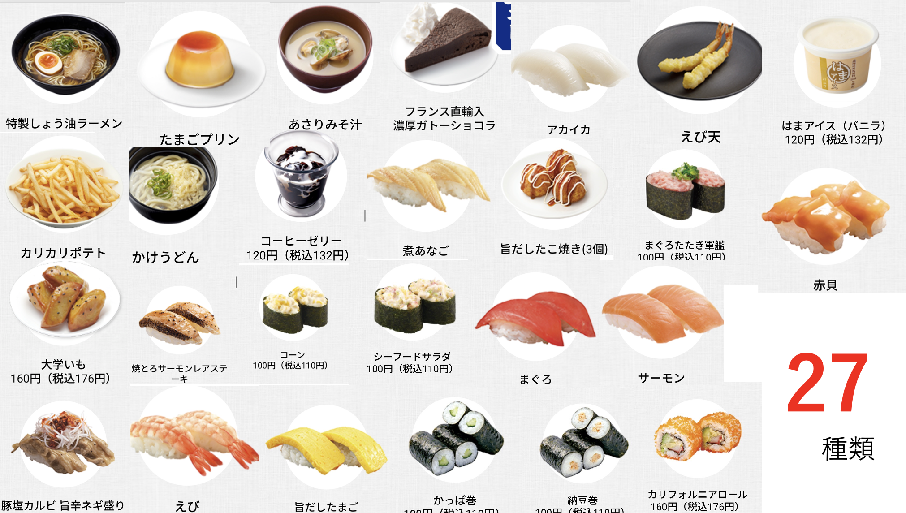
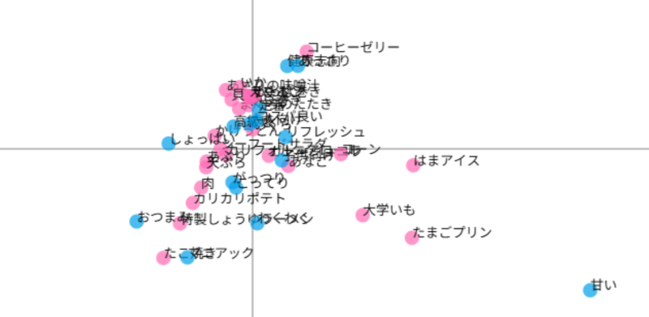
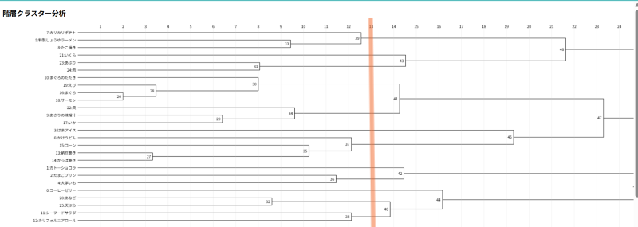

第５回 コレスポンデンス分析
はま寿司 コレスポンデンス分析・クラスター分析
私たちの班では、はま寿司の以下の商品２７種類をピックアップし分析を行った。

コレスポンデンス分析

累積寄与率：20.55％
全体的に中央に寄っているが、その中でもサイドメニューが外側に位置している。
このような結果になった原因として、デザートやサイドメニューを入れて比較したため寿司類の評価が同じようなものになってしまったことが考えられる。
寿司類だけに絞ったり、評価項目の工夫をしたりすれば良い分析ができたと思う。
クラスター分析

13の位置で区切って分析を行った。
コレスポンデンス分析よりは特徴ごとにまとまっていると思う。